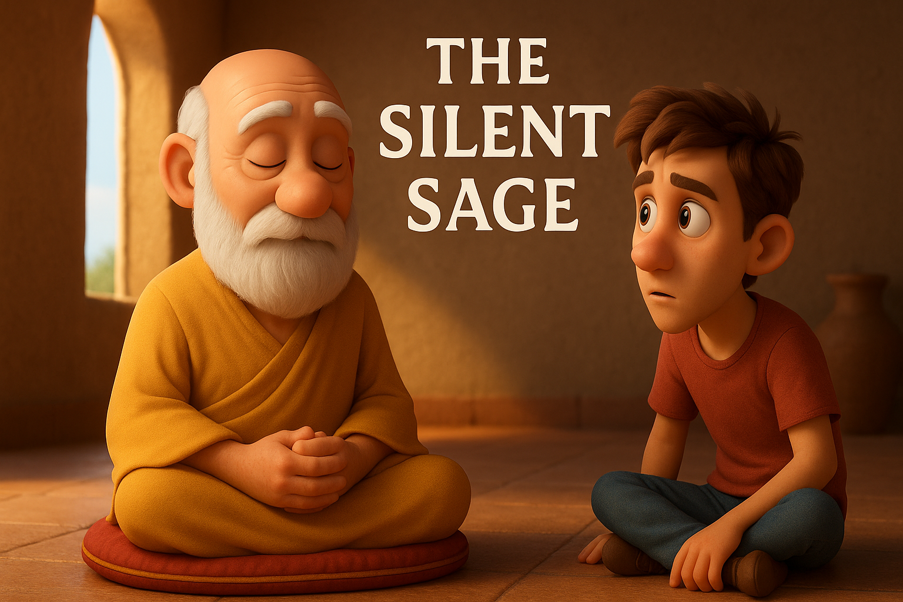

Long ago, in a quiet village nestled between rolling hills, there lived a sage known simply as the Silent Sage. People from near and far came to seek his wisdom, but he rarely spoke. Instead, he listened carefully, his eyes full of calm understanding.
One day, a restless young man came to him and said,
“Wise Sage, I have traveled far and heard much, but I cannot find peace. Tell me, what is the secret to true wisdom?”
The Silent Sage looked at the young man gently and replied,
“Before I answer, tell me—what do you seek in words?”
The young man frowned, puzzled,
“I seek answers. I want to understand life, truth, and how to be happy.”
The sage nodded slowly, then remained silent for a long moment.
Finally, he said,
“Words can carry great wisdom, but they can also create noise and confusion. True understanding often grows not in what is said, but in what is held quietly within.”
The young man was frustrated.
“But how can silence teach me anything? I need guidance!”
The sage smiled softly,
“Silence is the space where your heart speaks, where your mind can hear its own truth. When you quiet the noise around you—words, distractions, fears—you begin to listen deeply, not only to others, but to yourself.”
The young man sat quietly beside the sage. Hours passed in silence, and slowly he felt a calmness rising inside him, a stillness that spoke louder than any words.
Before leaving, the young man asked once more,
“So, is silence the answer to all my questions?”
The sage looked at him kindly and said,
“Silence is not the answer; it is the way to find your own answers. Speak less, listen more, and wisdom will come—not from others, but from within.”
From that day, the young man practiced silence and listening. And over time, he found the peace and clarity he had long sought.
↠Back to stories
سال‌ها پیش، در دهکده‌ای آرام میان تپه‌های نرم، Øکیمی بود که فقط «Øکیم خاموش» نام داشت. مردم از دور و نزدیک برای طلب Øکمت نزد او می‌آمدند، اما او به ندرت سخن می‌گفت. به جای آن، با دقت گوش می‌داد، چشمانش پر از فهم و آرامش بود.
روزی جوانی ناآرام پیش او آمد و گفت،
«Øکیم دانا، سفرهای زیادی کردم و بسیار شنیدم، اما آرامش نیافتم. به من بگو، راز Øکمت واقعی چیست؟»
Øکیم خاموش با مهربانی به جوان نگاه کرد و پاسخ داد،
«قبل از پاسخ، بگو—در کلمات چه می‌جویی؟»
جوان با تعجب اخم کرد،
«جواب می‌خواهم. می‌خواهم زندگی، Øقیقت و شادی را بفهمم.»
Øکیم به آرامی سر تکان داد و برای Ù„Øظه‌ای طولانی سکوت کرد.
سرانجام گفت،
«کلمات می‌توانند Øکمت بزرگی Øمل کنند، اما می‌توانند نویز و سردرگمی هم بسازند. فهم واقعی اغلب در آنچه گفته نمی‌شود بلکه در آنچه در سکوت درون نگه داشته می‌شود رشد می‌کند.»
جوان ناراØت شد.
«چطور سکوت می‌تواند چیزی به من بیاموزد؟ من راهنمایی می‌خواهم!»
Øکیم نرم لبخند زد،
«سکوت فضایی است که قلبت در آن سخن می‌گوید، جایی که ذهنت می‌تواند Øقیقت خود را بشنود. وقتی سر و صدای اطراف—کلمات، Øواس‌پرتی‌ها، ترس‌ها—را آرام کنی، عمیق‌تر گوش می‌دهی، نه فقط به دیگران، بلکه به خودت.»
جوان در کنار Øکیم آرام نشست. ساعت‌ها در سکوت گذشت، و آرام‌آرام اØساس آرامشی درونش زنده شد، سکوتی که از هر کلمه‌ای بلندتر سخن می‌گفت.
قبل از رفتن، جوان دوباره پرسید،
«پس، آیا سکوت جواب تمام سوالات من است؟»
Øکیم با مهربانی نگاه کرد و گفت،
«سکوت جواب نیست؛ راهی است برای یافتن پاسخ‌های خودت. کمتر سخن بگو، بیشتر گوش کن، و Øکمت خواهد آمد—نه از دیگران، بلکه از درون.»
از آن روز، جوان به تمرین سکوت و گوش دادن پرداخت. و به مرور زمان، آرامش و روشنی که سال‌ها به دنبال آن بود را یافت.
↠بازگشت به داستان‌ها